회원가입
다니는 센터에서 안내받은 링크로 앱을 설치하고 계정을 만듭니다.
1
센터에서 받은 링크 또는 앱스토어에서 센티프 회원 앱을 설치합니다.
2
[회원가입]에서 이메일과 기본 정보를 입력해 계정을 만듭니다.
3
온보딩 단계에서 운동 목표 등 기본 정보를 설정하면 준비 끝입니다.
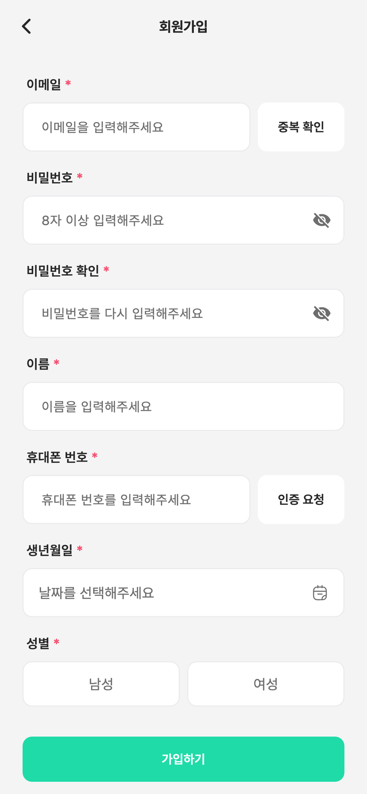
다니는 센터에서 안내받은 링크로 앱을 설치하고 계정을 만듭니다.
센터에서 받은 링크 또는 앱스토어에서 센티프 회원 앱을 설치합니다.
[회원가입]에서 이메일과 기본 정보를 입력해 계정을 만듭니다.
온보딩 단계에서 운동 목표 등 기본 정보를 설정하면 준비 끝입니다.

가입할 때 발급되는 내 연동 코드를 센터의 관리자나 담당 강사에게 보여주면 자동으로 연결됩니다. 연동되면 수업 일정 · 기록 · 루틴이 내 앱으로 들어옵니다.
온보딩 화면에서 발급된 내 연동 코드를 확인합니다.
이 코드를 센터의 관리자 또는 담당 강사에게 보여주세요. 상대가 코드를 입력하면 연동 완료로 바뀝니다.
연동되면 내 프로필이 센터와 이어지고, 수업 일정 · 기록 · 루틴이 앱에 나타납니다.
오늘의 수업 일정 — 다가오는 수업 시간을 확인합니다.
웰니스 기록 — 컨디션 · 수면 · 수분 · 걸음을 체크하면 링 게이지가 채워집니다.
오늘의 루틴 — 강사가 처방한 개인운동이 있다면 여기서 바로 시작합니다.
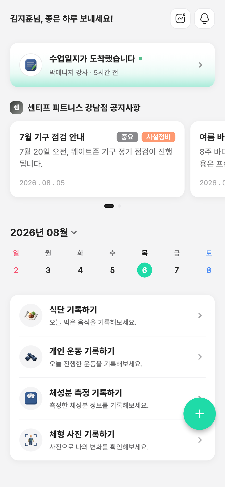
[일정]에서 예약된 수업을 확인합니다. 수업 하루 전에 리마인드 알림이 옵니다.
원하는 시간이 있다면 [예약 요청]으로 강사에게 수업을 신청할 수 있습니다.
일정 변경이 필요하면 강사와 채팅으로 조율하세요.
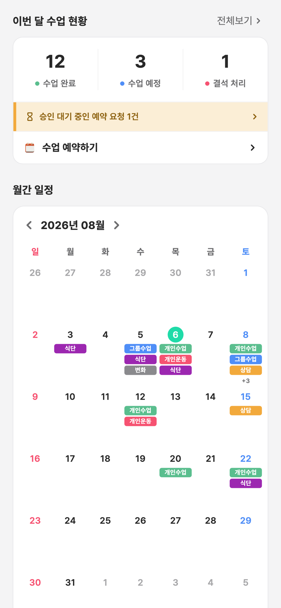
수업이 끝나면 강사가 남긴 오늘의 기록이 도착합니다.
[수업 기록]에서 지난 수업들을 시간순으로 볼 수 있습니다.
기록을 열면 오늘 한 운동 · 세트 · 무게, 강사의 코멘트와 사진을 확인할 수 있습니다.
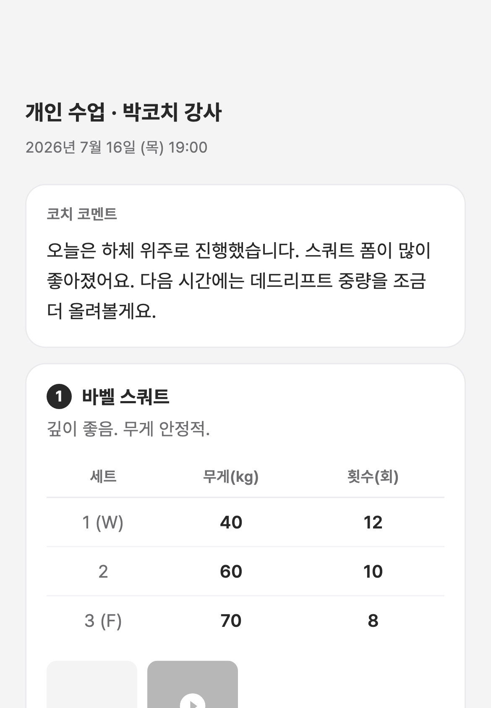
홈에서 [+] 버튼을 눌러 개인운동을 선택합니다.
오늘 한 운동을 기록하고 사진을 함께 올려보세요.
강사가 확인하고 코멘트나 이모지로 피드백을 남겨줍니다.
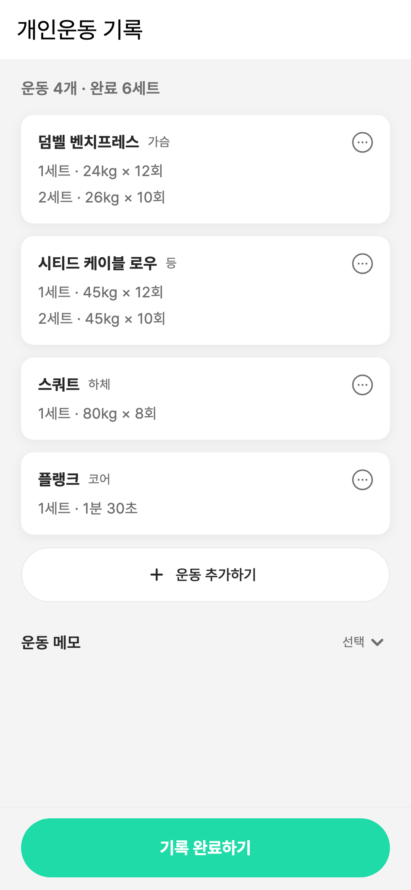
[+] 버튼에서 식단을 선택하고 끼니 사진을 올립니다.
강사가 식단을 보고 피드백을 남겨요. 꾸준히 올릴수록 정확한 코칭을 받을 수 있습니다.
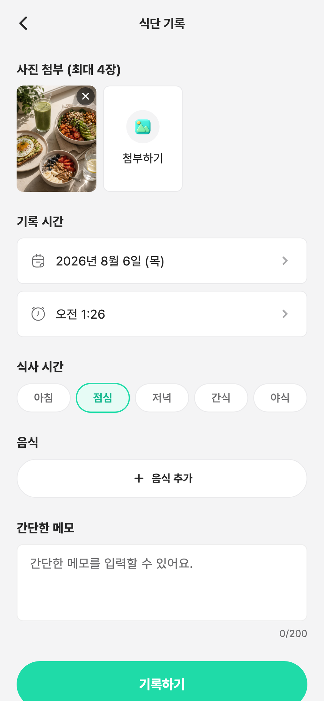
인바디 수치와 체형사진을 직접 올리면, 강사가 기록한 데이터와 함께 내 변화가 한 곳에 쌓입니다.
[+] 버튼에서 체성분을 선택하고 체중 · 골격근량 · 체지방률 등 측정값을 입력합니다.
체형사진은 정면 · 측면 · 후면 3장을 올려주세요.
기록이 쌓이면 이전 사진과 나란히 비교해 변화를 확인할 수 있습니다.
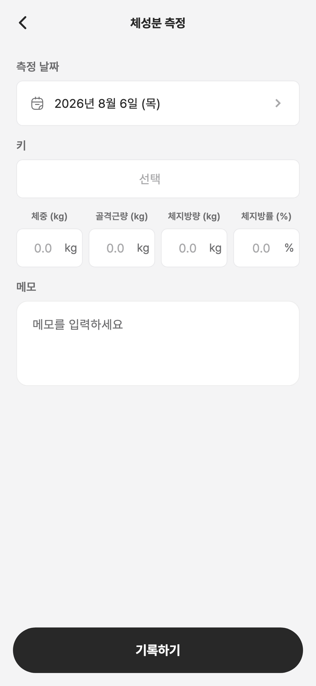
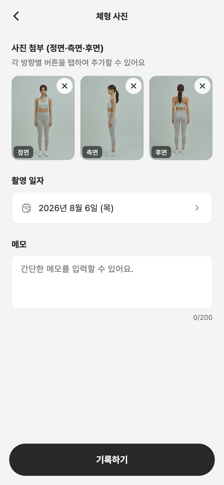
[통계]에서 내 운동량 · 출석 · 체성분 변화를 그래프로 확인합니다.
강사가 보내주는 주간 · 월간 리포트도 이곳에서 확인할 수 있습니다.
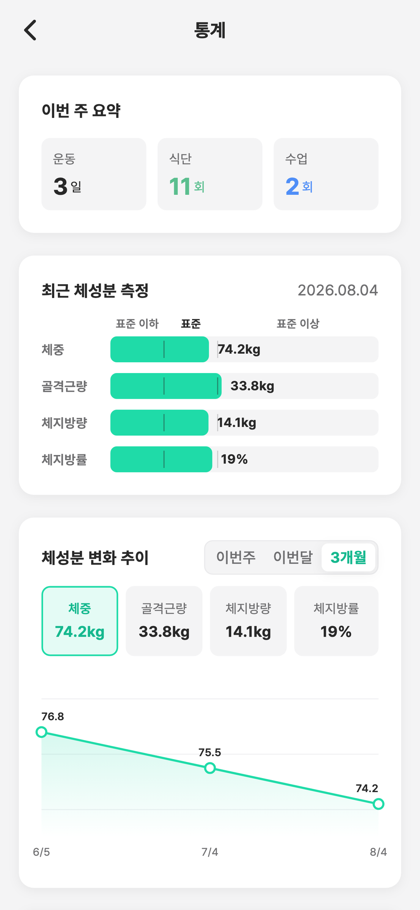
[채팅]에서 담당 강사와 1:1 대화방을 엽니다.
운동 질문, 일정 변경 요청을 부담 없이 메시지로 보내세요.
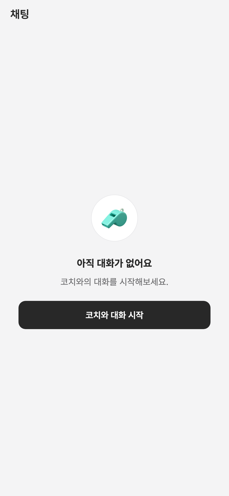
센터 공지(휴무, 이벤트 등)는 [공지]에서 확인합니다. 새 공지는 푸시 알림으로 도착합니다.
[알림]에서는 수업 리마인드, 루틴 도착 등 나에게 온 알림을 모아 봅니다.
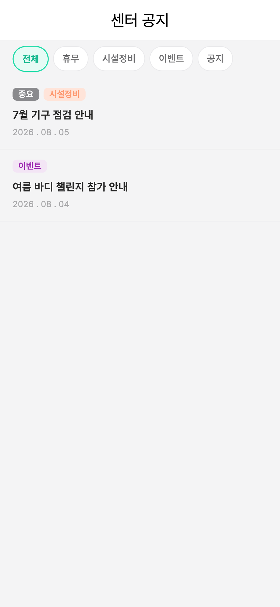
[마이] → [내 상품]에서 보유한 상품(수강권)을 확인합니다.
잔여 횟수와 만료일을 확인할 수 있습니다. 갱신 시점이 다가오면 강사와 상담해보세요.
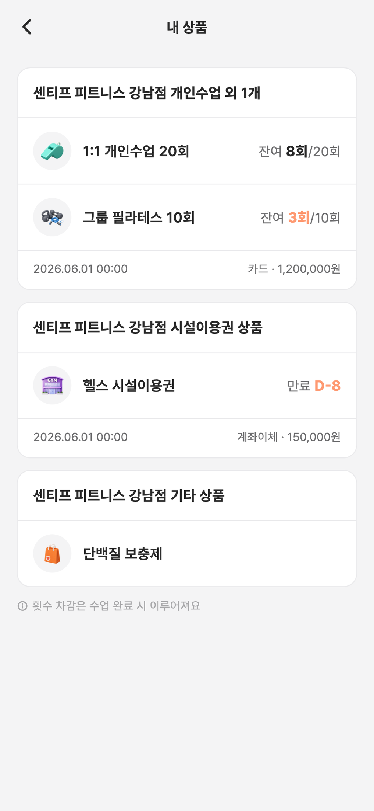
[마이]에서 내 프로필 정보를 관리합니다.
[설정]에서 알림 설정과 계정 관리를 할 수 있습니다.
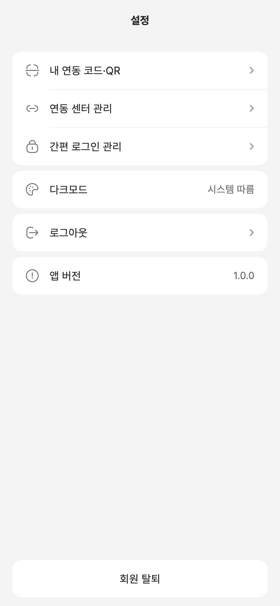
[설정] → [회원 탈퇴]를 눌러주세요.
삭제되는 데이터와 유지되는 데이터를 확인하고 탈퇴에 동의하면 처리가 완료됩니다.
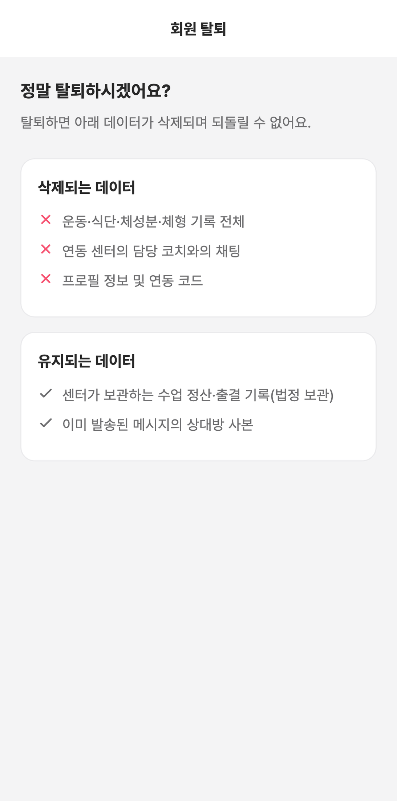